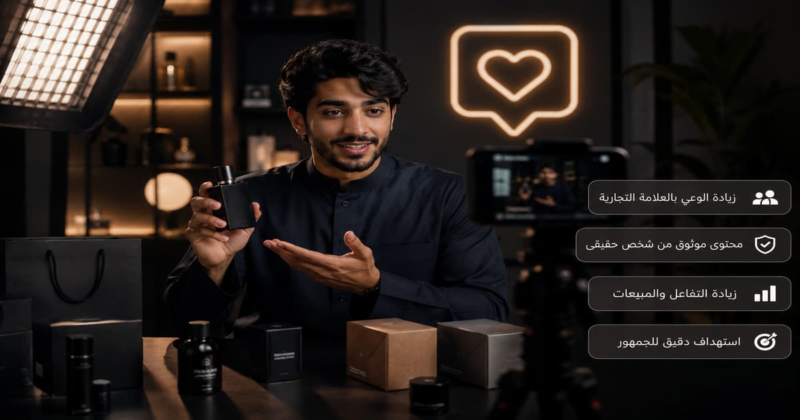
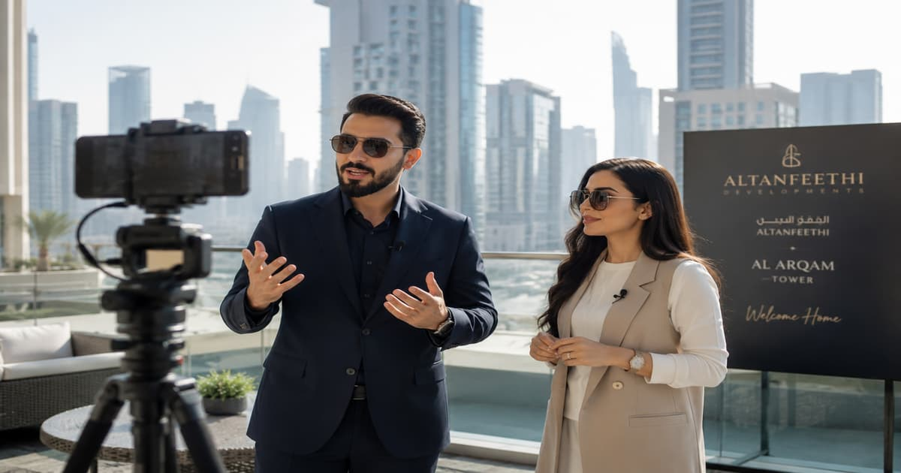

عندما تبدأ علامة تجارية في السعودية بالتفكير في التسويق عبر المشاهير، يظهر السؤال بسرعة: من هو المؤثر المناسب؟ قد تبدو الإجابة بسيطة في البداية: اختر الشخص الأكثر شهرة. لكن في الواقع، هذه هي النقطة التي تفشل عندها كثير من الحملات.
المؤثر الكبير يستطيع أن يمنحك ظهوراً واسعاً، لكن الظهور وحده لا يكفي. أنت تحتاج مؤثراً يملك جمهوراً مناسباً، أسلوباً قريباً من المنتج، ومصداقية تسمح له بأن يحرك المتابع من مجرد المشاهدة إلى السؤال أو الزيارة أو الشراء.
في السوق السعودي، تختلف قوة المؤثر حسب المنصة والمدينة والمجال. هناك مؤثر يصلح لحملة وعي وطنية، وآخر يناسب مطعماً في الرياض، وثالث أفضل لمنتج تجميل أو عناية، ورابع أقوى في التعليم أو بناء الثقة طويلة المدى.
أفضل مؤثر لحملتك ليس بالضرورة الأشهر، بل الأكثر قدرة على إيصال رسالتك للجمهور الصحيح بطريقة طبيعية وقابلة للقياس.
كيف اخترنا هذه القائمة؟
هذه القائمة ليست ترتيباً نهائياً حسب عدد المتابعين فقط، وليست وعداً بأن كل اسم مناسب لكل علامة تجارية. تم اختيار الأسماء بناءً على حضورها في السوق السعودي، قوة شهرتها، وضوح مجالها، وقابليتها للاستخدام في حملات تسويق عبر المؤثرين أو المشاهير.
قبل التعاقد مع أي مؤثر، يجب التأكد من ثلاثة أمور: أن جمهوره مناسب لجمهورك، أن محتواه لا يتعارض مع هوية علامتك، وأن أي إعلان مدفوع يتم وفق المتطلبات التنظيمية داخل السعودية، خاصة ما يتعلق بالإعلان التجاري عبر منصات التواصل.
الأرقام على منصات التواصل تتغير باستمرار. لذلك لا تعتمد على عدد المتابعين فقط، بل اطلب من المؤثر أو الوكالة أحدث بيانات الحساب: المدن، الفئة العمرية، الجنس، معدل المشاهدة، متوسط النقرات، وسجل الحملات السابقة.
جدول سريع: أفضل 10 مؤثرين سعوديين للتسويق عبر المشاهير
| المؤثر | المجال الأقوى | يناسب أي نوع من الحملات؟ |
|---|---|---|
| أحمد الشقيري | الوعي، القيم، التعليم، المبادرات | حملات الثقة، المسؤولية الاجتماعية، المشاريع الوطنية، والتعليم. |
| إبراهيم الحجاج | الكوميديا والترفيه | حملات جماهيرية تحتاج انتشاراً واسعاً وشخصية محبوبة. |
| دارين البايض | الترفيه واللايف ستايل | العلامات الشبابية، الموضة، الجمال، والمحتوى الخفيف. |
| هشام باعشن | الطبخ والمطاعم | المطاعم، الأغذية، منتجات المطبخ، وتجارب الطعام. |
| مودل روز | الجمال والموضة واللايف ستايل | العطور، المكياج، الأزياء، والبراندات البصرية. |
| عبدالعزيز بكر | الترفيه والفيديوهات الاجتماعية | الحملات الشبابية والمنتجات سهلة الانتشار. |
| مالك الحسيني | التعليم، الأسرة، المحتوى الهادف | التطبيقات التعليمية، الخدمات العائلية، والمنتجات التي تحتاج ثقة. |
| نوف الشعلان | الموضة واللايف ستايل | الأزياء، العطور، الجمال، والمنتجات الموجهة للنساء. |
| رهف الشمالي | الكوميديا والمحتوى الاجتماعي | الحملات الشبابية، التطبيقات، المنتجات اليومية، والترفيه. |
| عبدالملك زبيلة | الكوميديا ويوتيوب | الوعي بالعلامة، الترفيه، والإطلاقات التي تحتاج شخصية قريبة من الشباب. |
1. أحمد الشقيري: عندما تحتاج علامتك إلى ثقة ومعنى
أحمد الشقيري من أكثر الأسماء السعودية حضوراً عندما يتعلق الأمر بالمحتوى الهادف، البرامج التوعوية، والقضايا التي تحتاج ثقة عالية. قوته ليست في الإعلان المباشر فقط، بل في قدرته على ربط الفكرة بقيمة إنسانية أو اجتماعية أو معرفية.
يناسب أحمد الشقيري الحملات التي لا تريد بيع منتج بسرعة فقط، بل تريد بناء صورة قوية حول مشروع أو خدمة أو مبادرة. لذلك قد يكون مناسباً للجامعات، المنصات التعليمية، المبادرات الوطنية، حملات المسؤولية الاجتماعية، والمشاريع التي تحتاج لغة راقية وموثوقة.
اختر هذا النوع من المؤثرين عندما يكون هدفك بناء ثقة طويلة المدى، وليس فقط الحصول على زيارات سريعة خلال 24 ساعة.
2. إبراهيم الحجاج: قوة الكوميديا والانتشار الجماهيري
إبراهيم الحجاج اسم سعودي بارز في الترفيه والكوميديا والتمثيل. هذا النوع من المؤثرين مفيد للعلامات التي تريد دخولاً خفيفاً إلى وعي الجمهور دون أن يبدو الإعلان ثقيلاً أو مباشراً.
قوة الكوميديا أنها تجعل الإعلان قابلاً للمشاركة. إذا كان المنتج يسمح بفكرة مرحة أو موقف اجتماعي قريب من الناس، فقد يتحول المحتوى إلى حديث بين الجمهور، لا مجرد إعلان عابر.
| يناسب | لا يناسب كثيراً |
|---|---|
| الترفيه، التطبيقات، المطاعم، الفعاليات، المنتجات الشبابية. | المنتجات شديدة الجدية أو الخدمات التي تحتاج شرحاً فنياً طويلاً. |
3. دارين البايض: حضور شبابي يصلح للبراندات القريبة من الجيل الجديد
دارين البايض من الأسماء التي ارتبطت بالمحتوى الترفيهي واللايف ستايل، وهي مناسبة للعلامات التي تريد الوصول إلى جمهور شاب يتفاعل مع الشخصية واللقطة والرسالة السريعة.
هذا النوع من المؤثرين يناسب المنتجات التي يمكن عرضها بصرياً وبطريقة خفيفة: موضة، جمال، تطبيقات، فعاليات، مطاعم، منتجات يومية، أو حملات إطلاق تحتاج حضوراً اجتماعياً واضحاً.
4. هشام باعشن: خيار قوي للمطاعم وتجارب الطعام
إذا كانت حملتك مرتبطة بالمطاعم أو الأغذية أو منتجات المطبخ، فإن المؤثر المتخصص في الطعام يعطيك ميزة مهمة: الجمهور يتابعه أصلاً لهذا السبب. هشام باعشن من الأسماء المعروفة في هذا المجال، وله حضور واضح في محتوى الطبخ وتجارب الطعام.
ميزة مؤثري الطعام أنهم لا يحتاجون إلى إقناع الجمهور بأن الموضوع مناسب لهم. المتابع جاء ليرى وصفة، مطعماً، طبقاً، أو تجربة. لذلك تكون الدعوة إلى زيارة مطعم أو تجربة منتج غذائي أكثر طبيعية من مؤثر عام لا علاقة له بهذا المجال.
لا تكتفِ بصورة الطبق. اطلب من المؤثر أن يوضح تجربة الطلب، المكان، السعر التقريبي، الطبق المميز، ورابط الموقع أو طريقة الحجز.
5. مودل روز: مناسبة للجمال والموضة والعطور
مودل روز من الأسماء السعودية المعروفة في عالم الجمال والموضة واللايف ستايل. هذا النوع من المؤثرات يناسب العلامات التي تعتمد على الصورة، الإحساس، الهوية البصرية، والانطباع الشخصي.
إذا كنت تسوق لعطر، مكياج، عناية بالبشرة، أزياء، أو منتج فاخر، فالمهم ليس فقط أن يظهر المنتج، بل أن يظهر داخل أسلوب حياة يجعل الجمهور يتخيله جزءاً من يومه أو مناسبته أو إطلالته.
6. عبدالعزيز بكر: محتوى ترفيهي قريب من الجمهور
عبدالعزيز بكر من الأسماء السعودية المرتبطة بالمحتوى الترفيهي والفيديوهات الاجتماعية. قوته في القرب من الجمهور وصناعة محتوى يمكن أن ينتشر بسرعة إذا كانت الفكرة بسيطة وواضحة.
يناسب هذا النوع من المؤثرين العلامات التي تريد حملة خفيفة وسهلة الفهم، مثل التطبيقات، المطاعم، المنتجات اليومية، الفعاليات، أو الخدمات التي يمكن شرح فائدتها داخل موقف اجتماعي قصير.
7. مالك الحسيني: عندما تحتاج الحملة إلى عقلانية وثقة
مالك الحسيني من الأسماء السعودية التي يمكن أن تناسب حملات التعليم، الأسرة، المعرفة، والخدمات التي تحتاج شرحاً هادئاً. هذا النوع من المؤثرين ليس هدفه إثارة الضجة فقط، بل بناء اقتناع لدى الجمهور.
قد يكون مناسباً للمنصات التعليمية، التطبيقات العائلية، الخدمات الصحية المسموحة إعلانياً، المبادرات المجتمعية، أو المنتجات التي يحتاج العميل أن يفهم قيمتها قبل أن يقرر.
8. نوف الشعلان: للموضة واللايف ستايل والمنتجات النسائية
نوف الشعلان من الأسماء التي تظهر ضمن قوائم مؤثري الموضة واللايف ستايل في السعودية. يمكن التفكير فيها للحملات التي تستهدف جمهوراً نسائياً يهتم بالأزياء، العطور، الجمال، التفاصيل اليومية، والبراندات ذات الهوية البصرية.
في هذا النوع من الحملات، لا يكفي أن تطلب من المؤثرة ذكر اسم المنتج. الأفضل أن يظهر المنتج ضمن استخدام واقعي: كيف تختاره، متى تستخدمه، لماذا يناسب ذوقها، وما الفرق الذي يضيفه للتجربة.
9. رهف الشمالي: الكوميديا الاجتماعية والانتشار السريع
رهف الشمالي من الأسماء التي يمكن أن تناسب الحملات الشبابية والترفيهية، خصوصاً عندما تكون الفكرة قابلة للتقديم في موقف اجتماعي أو مشهد قصير.
هذا النوع من المحتوى مفيد عندما تريد العلامة أن تظهر بطريقة قريبة من الناس، لا بطريقة إعلان رسمي. لكنه يحتاج بريف ذكي حتى لا تطغى الكوميديا على الرسالة التجارية.
10. عبدالملك زبيلة: يوتيوب وكوميديا وشخصية قريبة من الشباب
عبدالملك زبيلة من صناع المحتوى السعوديين المعروفين في الكوميديا والمحتوى المرئي. يمكن أن يكون مناسباً للحملات التي تحتاج حضوراً أقرب إلى الشباب، وخصوصاً إذا كان المنتج أو الخدمة يمكن تقديمها داخل قصة أو موقف طريف.
الميزة في المؤثرين القادمين من يوتيوب أو الفيديو الطويل أنهم يفهمون بناء الفكرة، وليس مجرد الظهور السريع. لذلك يمكن استخدامهم في حملات تحتاج محتوى أكثر من مجرد ستوري أو منشور قصير.
كيف تختار من بين هذه الأسماء؟

القائمة السابقة تعطيك أسماء قوية، لكنها لا تختار بدلاً منك. الاختيار الصحيح يبدأ من هدف الحملة. هل تريد انتشاراً واسعاً؟ مبيعات مباشرة؟ زيارات لموقع؟ تحميل تطبيق؟ بناء ثقة؟ أم إطلاق منتج جديد؟
| هدف الحملة | نوع المؤثر المناسب | ماذا تقيس؟ |
|---|---|---|
| الوعي والانتشار | مشاهير كبار أو مؤثرون ترفيهيون | الوصول، المشاهدات، الذكر، البحث عن العلامة. |
| المبيعات المباشرة | مؤثر متخصص وجمهوره قريب من المنتج | الكود، الرابط، الطلبات، تكلفة العميل. |
| زيارة مطعم أو فرع | مؤثر محلي في المدينة نفسها | الزيارات، الحجوزات، رسائل واتساب، خرائط جوجل. |
| منتج تجميل أو موضة | مؤثرة لايف ستايل أو جمال | النقرات، الحفظ، الرسائل، المبيعات بالكود. |
| خدمة تحتاج ثقة | مؤثر هادف أو تعليمي | الاستفسارات الجادة، التسجيلات، جودة العملاء المحتملين. |
هل تختار مؤثراً سعودياً كبيراً أم مؤثرين متوسطين؟

في الحملات الكبيرة، قد يكون من المنطقي استخدام اسم مشهور لفتح الباب وبناء الثقة، ثم دعم الحملة بمجموعة مؤثرين متوسطين أو متخصصين لتحقيق التحويل. أما في الحملات الصغيرة، فقد يكون توزيع الميزانية على عدة مؤثرين أصغر أكثر ذكاءً من وضعها كلها في اسم واحد.
السبب بسيط: المؤثر الكبير يمنحك انتشاراً، لكن المؤثر المتخصص قد يمنحك قرار شراء. لذلك لا تفكر في القائمة كأنها سباق شهرة، بل كخريطة خيارات حسب هدفك.
Checklist قبل التعاقد مع أي مؤثر سعودي
- هل جمهور المؤثر موجود فعلاً في السعودية؟
- هل المدن الأقوى في حسابه تناسب حملتك؟
- هل الفئة العمرية مناسبة للمنتج؟
- هل لديه ترخيص أو التزام تنظيمي للإعلانات عند الحاجة؟
- هل سبق أن أعلن لمنتجات مشابهة؟ وما النتيجة؟
- هل التعليقات حقيقية أم مليئة بردود عامة؟
- هل يتفاعل جمهوره مع الإعلانات أم فقط مع المحتوى الترفيهي؟
- هل يمكنك الحصول على رابط تتبع أو كود خاص؟
- هل يحق لك استخدام المحتوى لاحقاً في الإعلانات الممولة؟
- هل الاتفاق مكتوب ويحدد موعد النشر وعدد القطع ومدة بقاء المحتوى؟
أخطاء شائعة عند اختيار مؤثرين سعوديين
أول خطأ هو اختيار المؤثر لأنه مشهور فقط. الشهرة تساعد في الظهور، لكنها لا تضمن أن جمهوره سيهتم بمنتجك. الخطأ الثاني هو تجاهل المنصة. مؤثر قوي على سناب شات قد لا يعطيك نفس النتيجة على إنستغرام أو تيك توك، والعكس صحيح.
الخطأ الثالث هو عدم إعطاء المؤثر بريف واضح. عندما لا يعرف المؤثر الهدف والرسالة والجمهور المطلوب، يتحول الإعلان إلى ذكر سريع للمنتج دون سبب مقنع للشراء.
الخطأ الرابع هو قياس النجاح بالمشاهدات فقط. المشاهدات مهمة، لكنها لا تكفي إذا كان هدفك مبيعات أو حجوزات أو طلبات. يجب أن يكون لكل مؤثر رابط أو كود أو طريقة قياس منفصلة.
نموذج بريف سريع لحملة مع مؤثر سعودي
| العنصر | ما الذي تكتبه؟ |
|---|---|
| هدف الحملة | زيادة المبيعات، إطلاق منتج، زيارات فرع، تحميل تطبيق، أو بناء وعي. |
| الجمهور | المدينة، العمر، الاهتمامات، الجنس، ونوع العميل المطلوب. |
| المنصة | Snapchat، TikTok، Instagram، YouTube، أو أكثر من منصة. |
| الرسالة الأساسية | الفائدة التي يجب أن يفهمها المتابع من أول مرة. |
| الدعوة لاتخاذ إجراء | استخدم الكود، اضغط الرابط، احجز الآن، زر الفرع، أو حمّل التطبيق. |
| القياس | كود خاص، UTM، رقم واتساب منفصل، أو صفحة هبوط خاصة. |
إذا كنت لا تزال في مرحلة بناء الخطة، يمكنك الرجوع إلى دليل كيف تشغّل حملة مؤثرين في السعودية تحقق مبيعات فعلية؟ لأنه يشرح خطوات تشغيل الحملة من البريف إلى القياس.
الخلاصة: الاسم مهم، لكن المطابقة أهم
أفضل 10 مؤثرين سعوديين في هذه القائمة يمكن أن يساعدوا علامتك التجارية بطرق مختلفة: بعضهم قوي في الثقة، بعضهم في الترفيه، بعضهم في الطعام، وبعضهم في الجمال واللايف ستايل. لكن نجاح الحملة لا يعتمد على الاسم وحده.
ابدأ من هدفك، ثم اختر المؤثر الذي يملك الجمهور المناسب، واكتب بريفاً واضحاً، واتفق على حقوق الاستخدام، وضع طريقة قياس من البداية. عندها يصبح التسويق عبر المشاهير في السعودية أداة نمو حقيقية، وليس مجرد ظهور مكلف لا تعرف كيف تقيس نتيجته.
الأسئلة الشائعة حول أفضل المؤثرين السعوديين للتسويق
من هو أفضل مؤثر سعودي للتسويق عبر المشاهير؟
لا يوجد مؤثر واحد هو الأفضل لكل الحملات. أحمد الشقيري قد يناسب حملات الثقة والمبادرات، هشام باعشن يناسب الطعام والمطاعم، ومؤثرات اللايف ستايل يناسبن الجمال والموضة. القرار يعتمد على هدفك وجمهورك.
هل المؤثر الكبير أفضل من المؤثر المتوسط؟
ليس دائماً. المؤثر الكبير يمنحك انتشاراً واسعاً، لكن المؤثر المتوسط أو المتخصص قد يحقق مبيعات أفضل إذا كان جمهوره قريباً جداً من منتجك. الأفضل غالباً هو الجمع بين الانتشار والتخصص.
ما أهم معيار لاختيار مؤثر سعودي؟
أهم معيار هو تطابق الجمهور مع جمهورك المستهدف. بعد ذلك تأتي جودة المحتوى، معدل التفاعل، المدينة، المنصة، سمعة المؤثر، وسجل الإعلانات السابقة.
هل يجب طلب بيانات الحساب قبل التعاقد؟
نعم. اطلب أحدث بيانات الجمهور، مثل المدن، الأعمار، الجنس، معدل المشاهدة، معدل النقرات، وأمثلة من حملات سابقة. لا تعتمد على عدد المتابعين وحده.
هل يحتاج المؤثر إلى ترخيص للإعلانات في السعودية؟
عند تنفيذ محتوى إعلاني مدفوع داخل السعودية، يجب الانتباه للمتطلبات التنظيمية الخاصة بالإعلان عبر منصات التواصل، ومنها ترخيص موثوق عند انطباقه. لذلك يجب التحقق من الامتثال قبل النشر.
ما أفضل منصة للتسويق عبر المؤثرين في السعودية؟
يعتمد ذلك على المنتج. سناب شات قوي للحملات المحلية والزيارات السريعة، تيك توك مناسب للانتشار والاكتشاف، إنستغرام مناسب للهوية البصرية واللايف ستايل، ويوتيوب مناسب للشرح العميق وبناء الثقة.